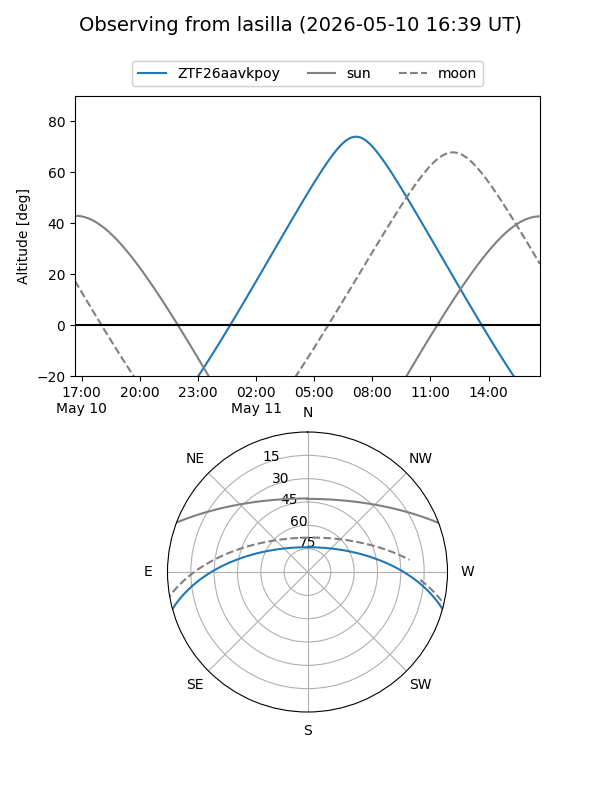
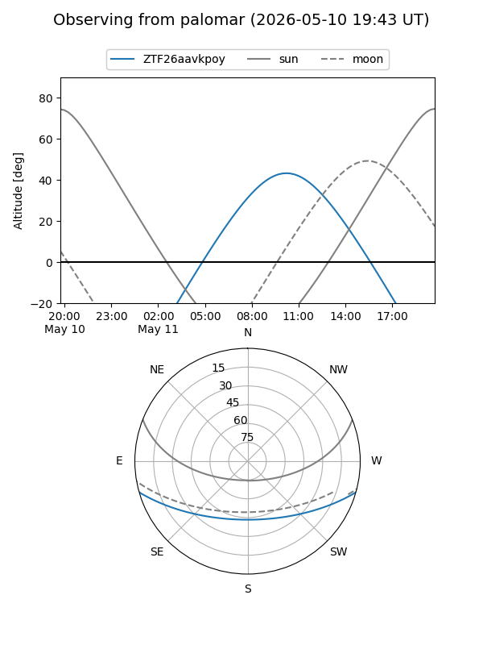

ZTF26aavkpoy
Target ZTF26aavkpoy at 2026-05-11 11:24
Aliases and brokers:
FINK: link
Lasair: link
ALeRCE: link
alt names
ZTF26aavkpoy (ztf,fink_ztf)
Coordinates:
equatorial (ra, dec) = 265.2929,-13.30484
equatorial (HMS+DMS) = 17:41:10.29,-13:18:17.43
galactic (l, b) = (12.8742,+9.00175)
Flags:
Photometry:
last ztfg=19.03
2 ztfg detections
Lightcurve
Visibility


Additional plots